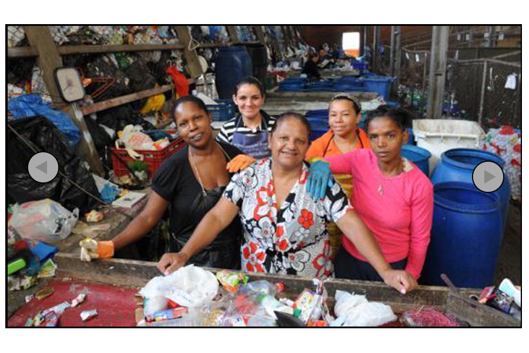
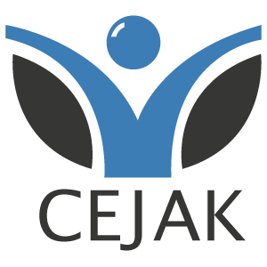
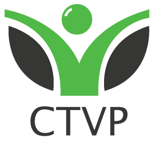
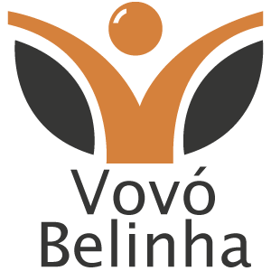

Gerar e facilitar oportunidades de crescimento pessoal e qualificação
profissional para melhorar a qualidade de vida da comunidade da Vila
Pinto
O Centro de Educação Ambiental (CEA) é uma Organização Não
Governamental fundada em 1996 com a iniciativa de um grupo de mulheres
da comunidade. Lideradas por Marli Medeiros, decidiram transformar a
condição de pobreza e violência a que estavam submetidas e buscar
alternativas que lhes garantissem independência e qualidade de vida.
Definiram juntas, como objetivo principal de sua luta, a promoção, a defesa e
a garantia de seus direitos.
Historia
O CEA está localizado na Vila Pinto, Bairro Bom Jesus, zona Leste de Porto
Alegre. A Vila Pinto, juntamente com a Vila Divinéia e Vila Nossa Senhora de Fátima,
integra a região da "Grande Mato Sampaio", lugar conhecido como um dos bolsões de
miséria da cidade de Porto Alegre. A sua comunidade apresenta as seguintes
características:
- Alto índice de drogadição.
- Maior número de portadores do vírus de HIV relativo a população total.
- Vem apresentando um crescimento acelerado da prostituição infantil.
- Média da renda familiar de um salário mínimo.
- Nível de escolaridade médio é o Ensino Fundamental Incompleto.
A Vila Pinto tem população de 11.000 pessoas que, somadas às outras duas
vilas totaliza uma população de 30.000 habitantes. Estima-se que 70% das famílias
residentes na Vila Pinto vivem em situação de risco social e, garantem minimamente seu
sustento através da venda de material reciclável, cuja prática por falta de alternativas, é
desenvolvida também por crianças e adolescentes.

CEJAK - Centro Cultural James Kulisz
Promover a inclusão sócio cultural e educacional de crianças, jovens e
adultos, moradores da comunidade local, oferecer a oportunidade de modificação da
condição de risco social da comunidade local e, potencializar os envolvidos a serem
futuros multiplicadores das ações desenvolvidas para o benefício da coletividade.

CTVP - Centro de Triagem da Vila Pinto
É uma associação de trabalhadores de baixa renda, preferencialmente
mulheres, que realizam a seleção de material reciclável, garantindo assim o sustento
financeiro de suas famílias e também as ações do Centro Cultural.

Escola de educacao infantil Vovo Belinha
A Escola de Educação Infantil Vovó Belinha, é fruto de uma grande batalha do Centro de Educação Ambiental – CEA que vem a ser uma Organização Não Governamental, fundada em 1996 através da iniciativa de um grupo de mulheres da comunidade, liderada por Marli Medeiros, decididas em transformar a condição de pobreza e violência a que estavam submetidas.
